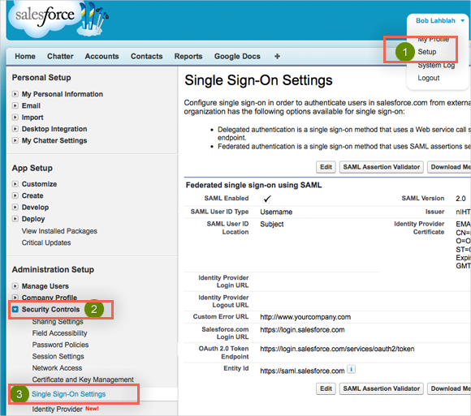
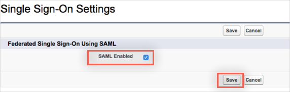
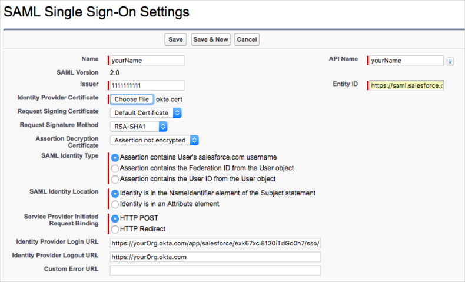
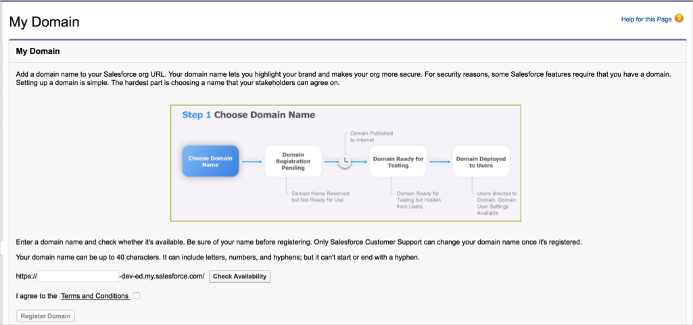
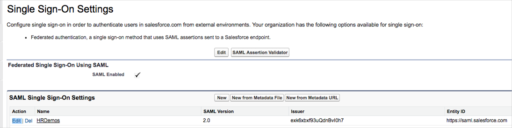
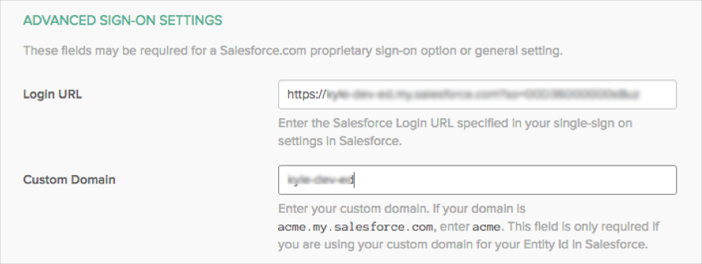

This document contains instructions for configuring SAML 2.0 for Salesforce (see Configuring SAML below), as well as additional, useful information you may need about How to Configure SP-Initiated SAML between Salesforce and Okta, and How to Configure Delegated Authentication in Salesforce (optional).
CLICK HERE to log in to Salesforce with the same administrator username and password-token used for User Management settings in Okta.
Navigate to Setup > Security Controls > Single Sign-On Settings:

On the Single Sign-On Settings page, click Edit, check the SAML Enabled box to enable the use of SAML Single-Sign On, then click Save:

Next, in the list at the bottom of your page, select New to add a new SAML Single-Sign On configuration. A SAML Single Sign-On Setting Detail page will open, enter the following information (an example of the page is shown here):

Enter the following:
Unless otherwise noted, leave the default values as-is.
Name: Enter a name of your choice.
SAML Version: Make sure this is set to 2.0. This should be enabled by default.
Issuer: Copy and paste the following:
Sign into the Okta Admin dashboard to generate this value
Identity Provider Certificate: Download, then upload the following certificate into this field:
Sign into the Okta Admin dashboard to generate this value
Identity Provider Login URL: Copy and paste the following:
Sign into the Okta Admin dashboard to generate this value
This URL will authenticate your users when they attempt to log in directly to Salesforce or click on a deep link in Salesforce and are not currently authenticated. This is required if you want to enable SP-Initiated SAML authentication.
Identity Provider Logout URL: Optional. Copy and paste the following:
Sign into the Okta Admin Dashboard to generate this variable.
API Name: Enter an API name of your choice.
Entity ID:
If you have a custom domain setup, use https://[customDomain].my.salesforce.com.
If you do not have a custom domain setup, use https://saml.salesforce.com.
Click Save.
Make note of the Salesforce Login URL that will appear after you click Save.
In Okta, select the Sign On tab for the Salesforce app, then click Edit.
Enter the Salesforce Login URL into the Login URL field.
If you are using a custom domain, then enter that value into the Custom Domain field, otherwise leave it blank.
Click Save.
By completing the steps above, your users will be able to access SalesForce from a single click on the Okta User Dashboard. This process of logging into Salesforce or other cloud apps from Okta is known as IDP-Initiated SAML. However, if at any point your users navigate directly to Salesforce, or click any deep links that directs them to SalesForce first instead of Okta, they won’t be given the same single-sign on experience unless SP-Initiated SAML is also configured. This is an optional configuration. Use the steps below to set up SP-Initiated SAML.
Use of SP-Initiated SAML requires your SalesForce instance to be setup with a customized domain name specific to your company. In Salesforce, these are referred to as My Domains. To add a My Domain:
In Salesforce, click Setup.
Click Domain Management to open the sub-menu.
Click My Domain.

Provide a name for your org, check availability, then choose Register Domain.
At this point your new org name in SalesForce (https://[orgname].my.salesforce.com) will be published to the internet and should become widely available for use within 12-24 hours. You can test this by trying to navigate to your new org name in a browser window.
While your new My Domain is being setup, you can make some configuration changes to your SalesForce and Okta single-sign on settings to use your new My Domain instead of the default values, as described here:
In Salesforce, navigate back to Security Controls & Single Sign-On Settings.
Locate the configuration you set up previously from the list on the page, then click Edit.

From here change the Entity ID field:
From: https://saml.salesforce.com.
To: https://[customDomain].my.salesforce.com, using the domain URL you just created.
Navigate to the Okta Admin Console and locate your SalesForce configuration.
Select the SSO tab.

Make sure that the Login URL matches the login URL provided in SalesForce on the Single-Sign On Settings tab.
Make sure that the Custom Domain field matches the name of the custom domain you have created.
If your domain is acme.my.salesforce.com, enter acme.
Click Save.
Once your My Domain is live, you’ll be able to specify Okta as the default preferred Authentication Service each time users navigate to your specific domain.
In Salesforce, navigate back to Domain Management > My Domains.
Under Authentication Configuration, click Edit.
In the Authentication Service drop down menu, check the box next to the Okta instance you’ve set up in single-sign on settings.
Click Save.
With configuration now complete, you can easily verify that SP-Initiated SAML has been properly configured. Simply navigate to your Salesforce Domain URL and you should be redirected to the Okta sign-on page for your org. Authenticating into Okta with a user assigned to Salesforce should then provide you access to SalesForce.
Please note: Delegated authentication is an optional integration that can be used in addition to SAML 2.0.
Delegated authentication enables various integrations with Salesforce — like the Microsoft Outlook plugin — as well as giving you the ability to lock a user out of Salesforce. Unlike SAML 2.0 single sign-on, delegated authentication is turned on at the user profile level. You have the ability to enable delegated authentication for a single user or large group; it all depends on who has the user profile where the Is Single Sign-On Enabled permission is enabled.
Where can I find this feature in my version of Salesforce?
You can't see this form until Salesforce has enabled delegated authentication for your organization. Once enabled, the delegated authentication form is located on the Single Sign-On Settings page in Salesforce — the same place where you configure SAML 2.0.
Call Salesforce at 1-800-667-6389 and ask them to enable delegated authentication for your organization. You can also do this by opening a case in the Salesforce customer service application.
Once Salesforce enables delegated authentication you can proceed with the steps below.
Go to the Single Sign-On Settings page located in the Setup > Security Controls section of Salesforce. Click the Edit button to display a form similar to the screenshot below.
Copy and paste the URL below into the Delegated Gateway URL field:
Sign into the Okta Admin dashboard to generate this valueClick Save

We recommend creating a test user profile so you can experiment with this feature on a single user. If you feel comfortable with this feature then you can skip to the next section.
Go to the Profiles page located in the Setup > Manage Users section of Salesforce
Open a User Profile you would like to experiment with
Click the Clone button to make a copy of this profile. Using a cloned profile allows you to avoid impacting any other users who have the original profile.
Give the cloned profile a name
Click Save
IMPORTANT: Enabling single sign-on for a user profile will affect every user who is assigned that user profile. If you want to experiment with a single user first, we recommend creating a cloned profile (see above) to test with.
Go to the Profiles page located in the Setup > Manage Users section of Salesforce
Click Edit on the user profile and scroll down to the General User Permissions section
Check the Is Single Sign-On Enabled checkbox
Click Save
IMPORTANT: Do not enable delegated authentication for the Salesforce user used by Okta to connect to the Salesforce User Management APIs. The API user is specified in Okta on the Salesforce User Management tab.
Go to the Users page located in the Setup > Manage Users section of Salesforce
Click Edit for a user you want to enable single sign-on for
Select a Profile that has delegated authentication single sign-on enabled (use the cloned profile if you are experimenting)
Click Save
In Okta, go to the People list and click a person's name to view their profile
Click Assign Application
Select Salesforce from the list and enter a Salesforce username that has delegated authentication enabled
Click Save
CLICK HERE to go to the Salesforce login page
Enter the Salesforce username you used in the previous section
Enter the Okta password for the Okta user assigned the Salesforce username above
Click Login
Assuming you logged in successfully, you can use these credentials for salesforce client application integrations like the Microsoft Outlook plugin and other APIs.
Your users are ready to single sign-on to Salesforce!